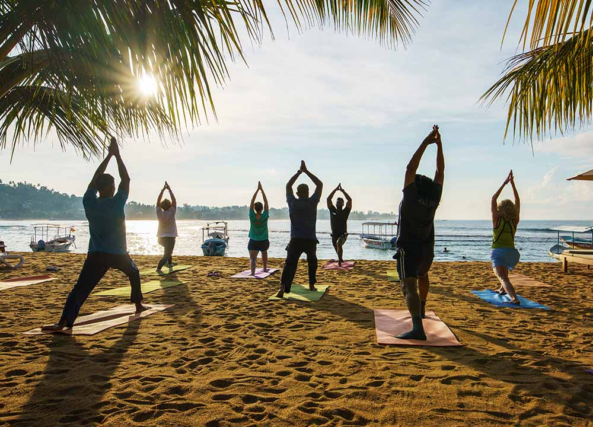
Natural healing • Inner peace • Time to unwind
Sri Lanka is a natural place to slow down, breathe deeply, and reconnect with yourself. Surrounded by tropical forests, ocean breezes, and misty hills, the island offers ancient wellness traditions passed down for centuries. Experience authentic Ayurveda treatments, herbal massages, and oil therapies, practice yoga and meditation in peaceful natural settings, and enjoy the calming rhythm of island life. Whether by the sea or in the cool hill country, wellness in Sri Lanka is about balance — body, mind, and soul.
Plan Your Journey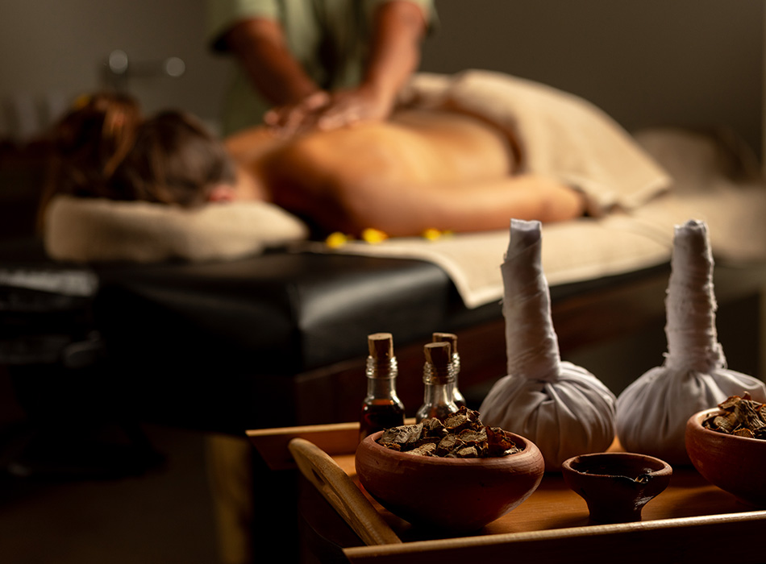
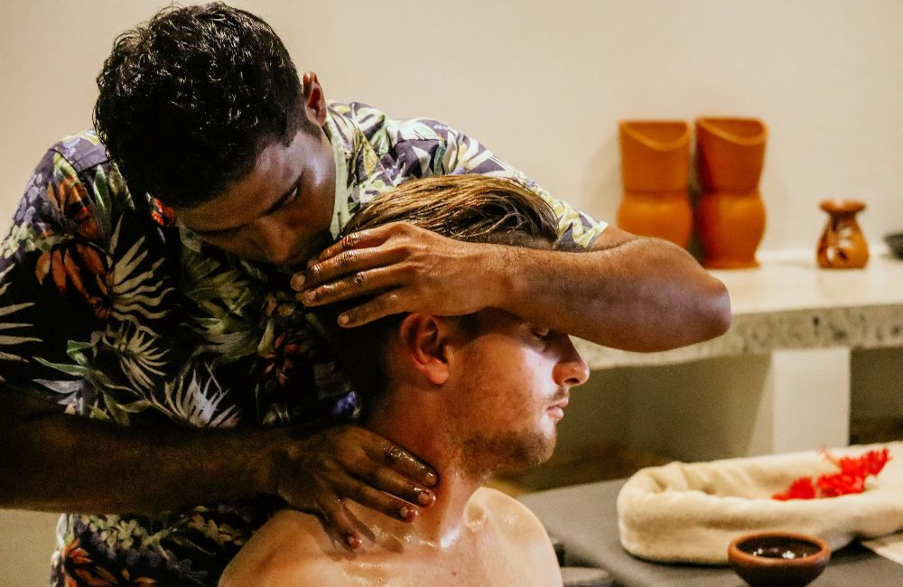
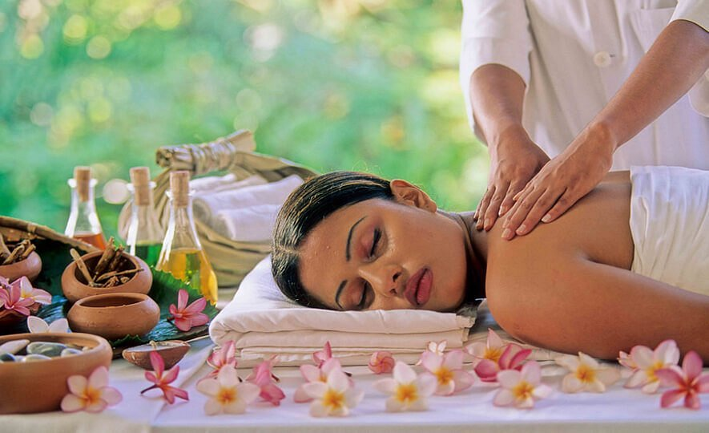
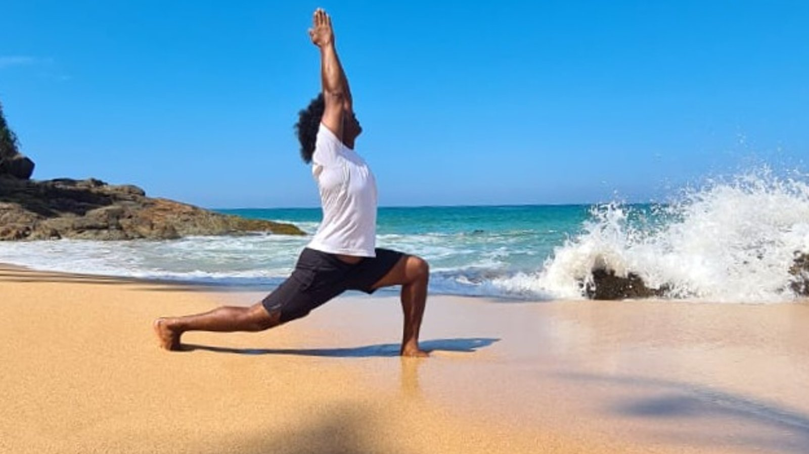
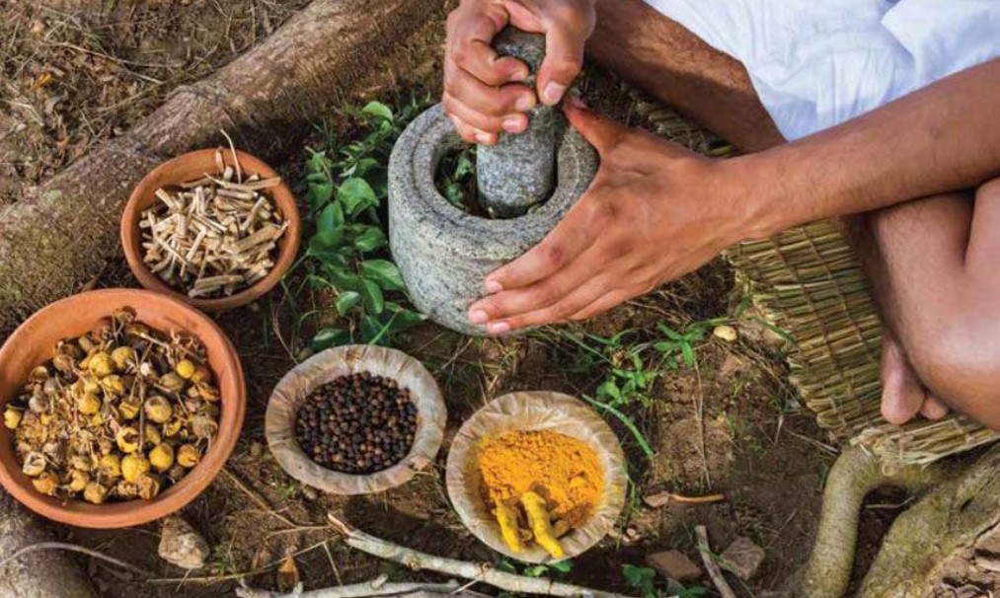
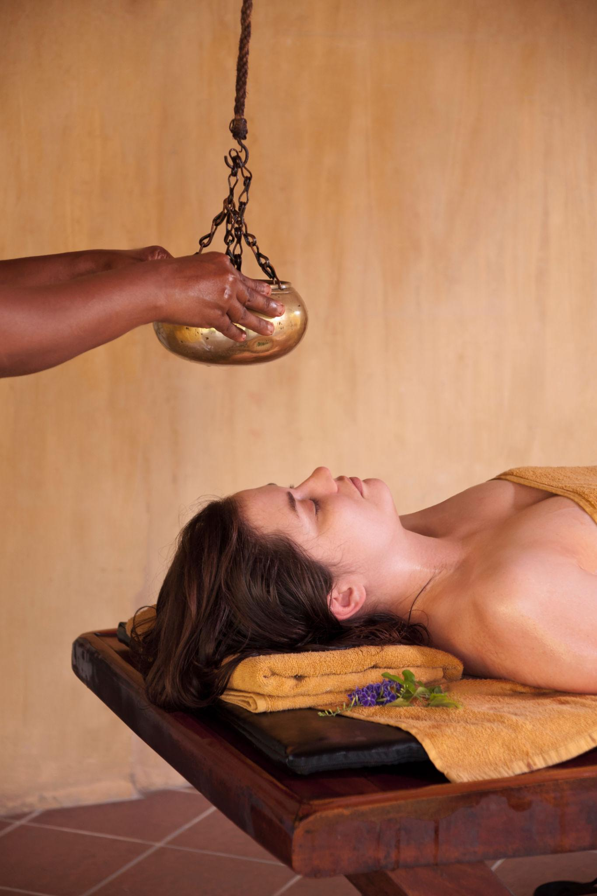
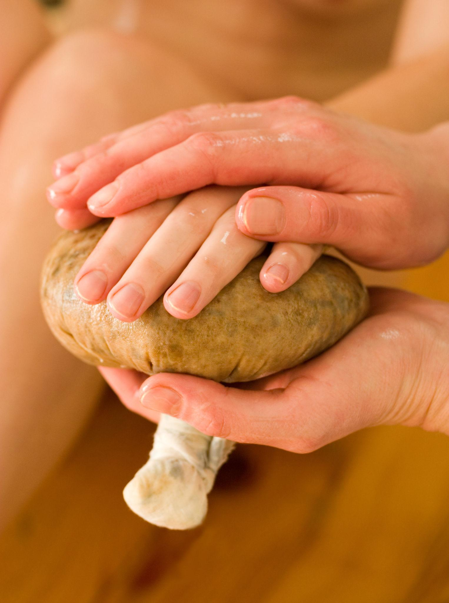
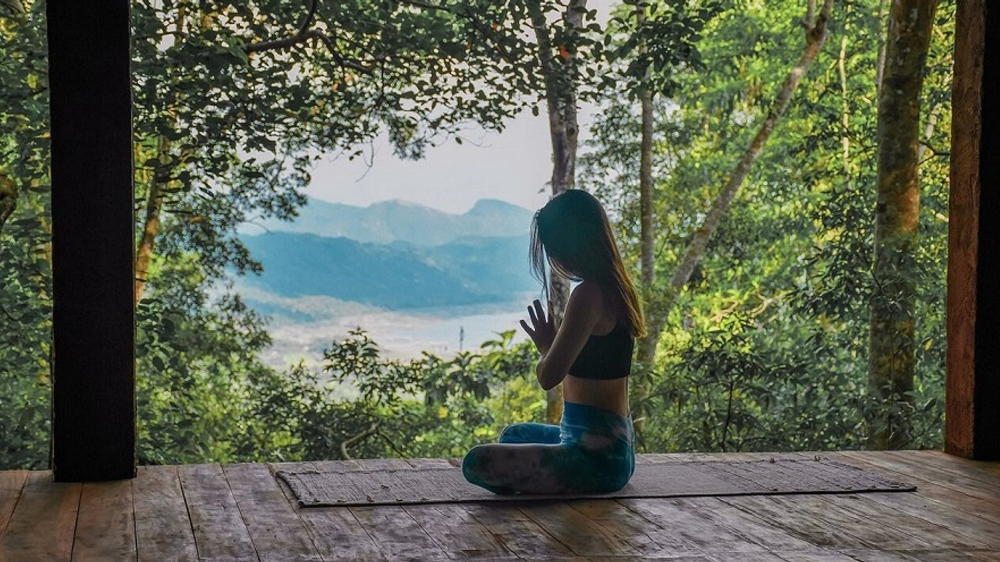
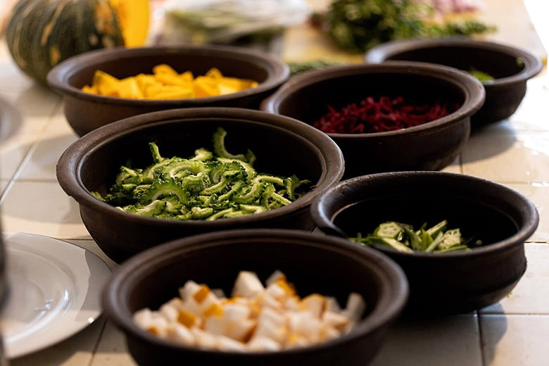
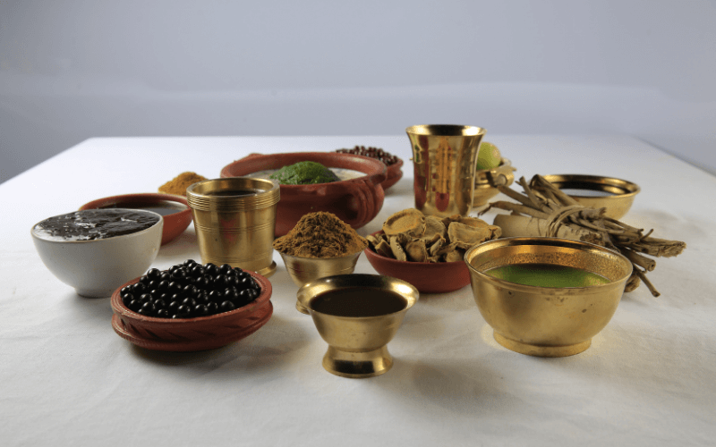
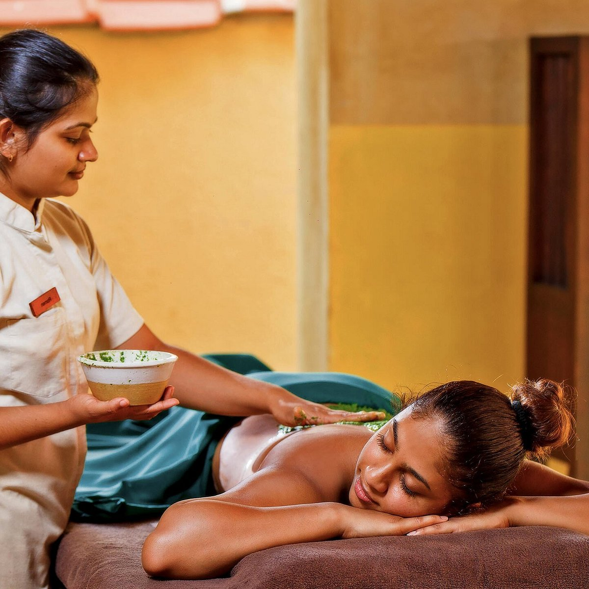